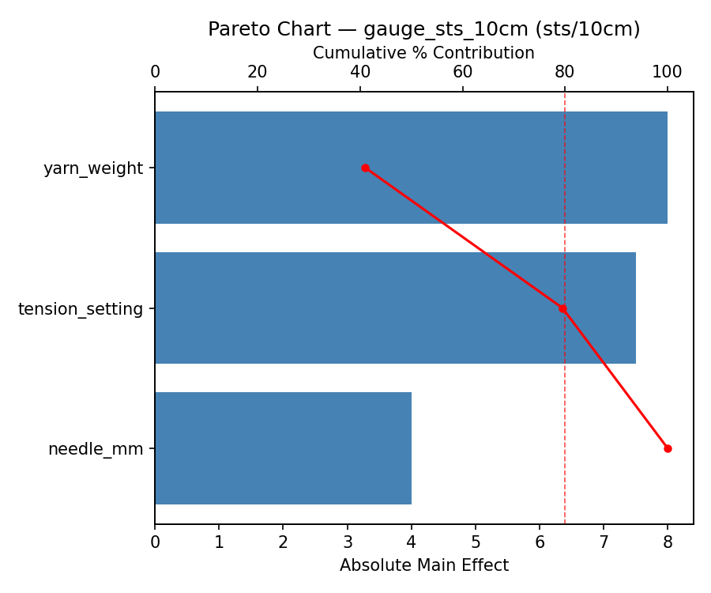
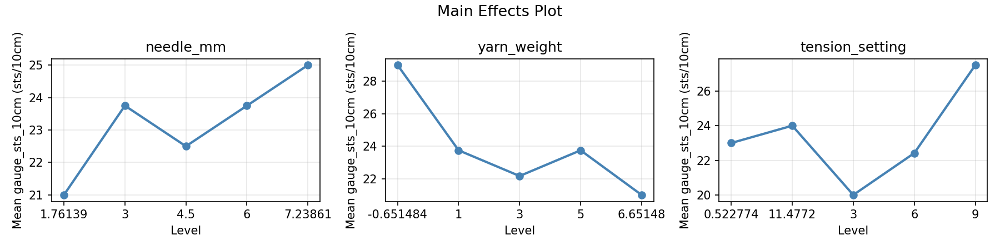
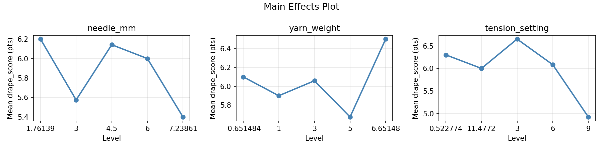
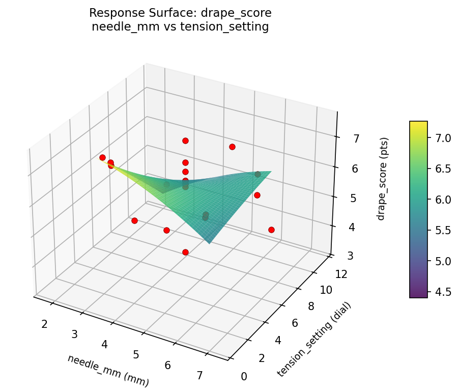
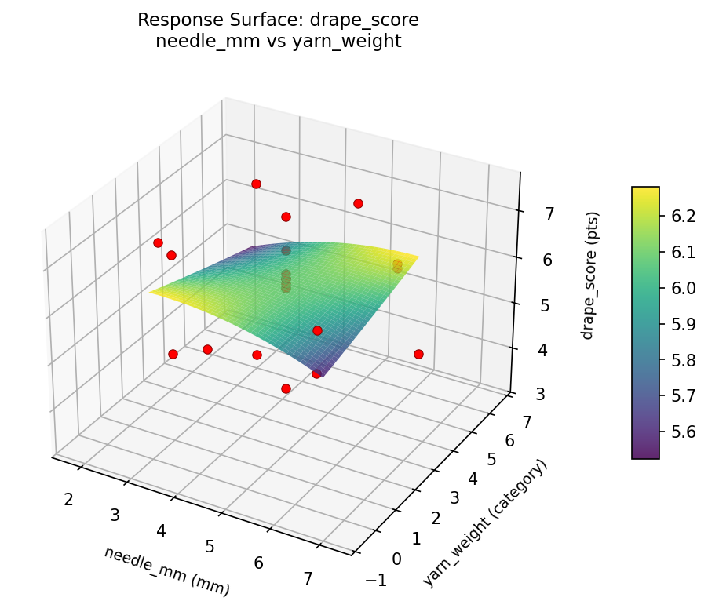
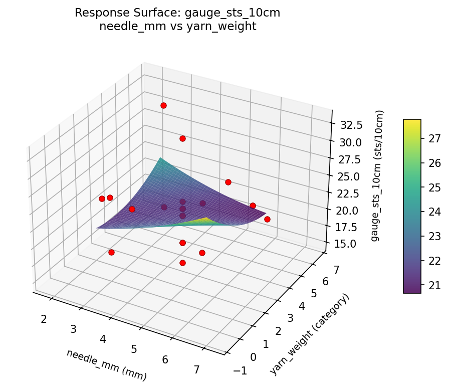

Experimental Setup
Factors
| Factor | Low | High | Unit |
|---|
needle_mm | 3.0 | 6.0 | mm |
yarn_weight | 1 | 5 | category |
tension_setting | 3 | 9 | dial |
Fixed: fiber = merino_wool, stitch_pattern = stockinette
Responses
| Response | Direction | Unit |
|---|
gauge_sts_10cm | ↑ maximize | sts/10cm |
drape_score | ↑ maximize | pts |
Configuration
{
"metadata": {
"name": "Knitting Gauge & Tension",
"description": "Central composite design to achieve target gauge and maximize fabric drape by tuning needle size, yarn weight, and tension setting"
},
"factors": [
{
"name": "needle_mm",
"levels": [
"3.0",
"6.0"
],
"type": "continuous",
"unit": "mm"
},
{
"name": "yarn_weight",
"levels": [
"1",
"5"
],
"type": "continuous",
"unit": "category"
},
{
"name": "tension_setting",
"levels": [
"3",
"9"
],
"type": "continuous",
"unit": "dial"
}
],
"fixed_factors": {
"fiber": "merino_wool",
"stitch_pattern": "stockinette"
},
"responses": [
{
"name": "gauge_sts_10cm",
"optimize": "maximize",
"unit": "sts/10cm"
},
{
"name": "drape_score",
"optimize": "maximize",
"unit": "pts"
}
],
"settings": {
"operation": "central_composite",
"test_script": "use_cases/178_knitting_tension/sim.sh"
}
}
Experimental Matrix
The Central Composite Design produces 22 runs. Each row is one experiment with specific factor settings.
| Run | needle_mm | yarn_weight | tension_setting |
|---|
| 1 | 4.5 | 3 | 6 |
| 2 | 6 | 1 | 9 |
| 3 | 3 | 5 | 3 |
| 4 | 4.5 | 6.65148 | 6 |
| 5 | 4.5 | 3 | 6 |
| 6 | 1.76139 | 3 | 6 |
| 7 | 4.5 | 3 | 0.522774 |
| 8 | 4.5 | 3 | 6 |
| 9 | 6 | 5 | 3 |
| 10 | 7.23861 | 3 | 6 |
| 11 | 4.5 | 3 | 6 |
| 12 | 4.5 | -0.651484 | 6 |
| 13 | 4.5 | 3 | 6 |
| 14 | 3 | 1 | 9 |
| 15 | 4.5 | 3 | 6 |
| 16 | 6 | 1 | 3 |
| 17 | 4.5 | 3 | 11.4772 |
| 18 | 6 | 5 | 9 |
| 19 | 4.5 | 3 | 6 |
| 20 | 3 | 1 | 3 |
| 21 | 3 | 5 | 9 |
| 22 | 4.5 | 3 | 6 |
Step-by-Step Workflow
1
Preview the design
$ python doe.py info --config use_cases/178_knitting_tension/config.json
2
Generate the runner script
$ python doe.py generate --config use_cases/178_knitting_tension/config.json \
--output use_cases/178_knitting_tension/results/run.sh --seed 42
3
Execute the experiments
$ bash use_cases/178_knitting_tension/results/run.sh
4
Analyze results
$ python doe.py analyze --config use_cases/178_knitting_tension/config.json
5
Get optimization recommendations
$ python doe.py optimize --config use_cases/178_knitting_tension/config.json
6
Generate the HTML report
$ python doe.py report --config use_cases/178_knitting_tension/config.json \
--output use_cases/178_knitting_tension/results/report.html
Features Exercised
| Feature | Value |
|---|
| Design type | central_composite |
| Factor types | continuous (all 3) |
| Arg style | double-dash |
| Responses | 2 (gauge_sts_10cm ↑, drape_score ↑) |
| Total runs | 22 |
Analysis Results
Generated from actual experiment runs using the DOE Helper Tool.
Response: gauge_sts_10cm
Top factors: yarn_weight (41.0%), tension_setting (38.5%), needle_mm (20.5%).
Pareto Chart

Main Effects Plot

Response: drape_score
Top factors: tension_setting (51.5%), yarn_weight (24.6%), needle_mm (23.9%).
Pareto Chart

Main Effects Plot

Response Surface Plots
3D surfaces fitted with quadratic RSM. Red dots are observed data points.
drape score needle mm vs tension setting

drape score needle mm vs yarn weight

drape score yarn weight vs tension setting

gauge sts 10cm needle mm vs tension setting

gauge sts 10cm needle mm vs yarn weight

gauge sts 10cm yarn weight vs tension setting

Full Analysis Output
RSM surface: rsm_gauge_sts_10cm_needle_mm_vs_yarn_weight.png
RSM surface: rsm_gauge_sts_10cm_needle_mm_vs_tension_setting.png
RSM surface: rsm_gauge_sts_10cm_yarn_weight_vs_tension_setting.png
RSM surface: rsm_drape_score_needle_mm_vs_yarn_weight.png
RSM surface: rsm_drape_score_needle_mm_vs_tension_setting.png
RSM surface: rsm_drape_score_yarn_weight_vs_tension_setting.png
=== Main Effects: gauge_sts_10cm ===
Factor Effect Std Error % Contribution
--------------------------------------------------------------
yarn_weight 8.0000 1.0022 41.0%
tension_setting 7.5000 1.0022 38.5%
needle_mm 4.0000 1.0022 20.5%
=== Summary Statistics: gauge_sts_10cm ===
needle_mm:
Level N Mean Std Min Max
------------------------------------------------------------
1.76139 1 21.0000 0.0000 21.0000 21.0000
3 4 23.7500 7.2284 18.0000 33.0000
4.5 12 22.5000 4.8148 15.0000 33.0000
6 4 23.7500 3.5000 22.0000 29.0000
7.23861 1 25.0000 0.0000 25.0000 25.0000
yarn_weight:
Level N Mean Std Min Max
------------------------------------------------------------
-0.651484 1 29.0000 0.0000 29.0000 29.0000
1 4 23.7500 4.7871 18.0000 29.0000
3 12 22.1667 4.4484 15.0000 33.0000
5 4 23.7500 6.4485 18.0000 33.0000
6.65148 1 21.0000 0.0000 21.0000 21.0000
tension_setting:
Level N Mean Std Min Max
------------------------------------------------------------
0.522774 1 23.0000 0.0000 23.0000 23.0000
11.4772 1 24.0000 0.0000 24.0000 24.0000
3 4 20.0000 2.3094 18.0000 22.0000
6 12 22.4167 4.8703 15.0000 33.0000
9 4 27.5000 4.6547 22.0000 33.0000
=== Main Effects: drape_score ===
Factor Effect Std Error % Contribution
--------------------------------------------------------------
tension_setting 1.7250 0.2071 51.5%
yarn_weight 0.8250 0.2071 24.6%
needle_mm 0.8000 0.2071 23.9%
=== Summary Statistics: drape_score ===
needle_mm:
Level N Mean Std Min Max
------------------------------------------------------------
1.76139 1 6.2000 0.0000 6.2000 6.2000
3 4 5.5750 1.8246 3.3000 7.1000
4.5 12 6.1417 0.8512 3.8000 7.5000
6 4 6.0000 0.4082 5.4000 6.3000
7.23861 1 5.4000 0.0000 5.4000 5.4000
yarn_weight:
Level N Mean Std Min Max
------------------------------------------------------------
-0.651484 1 6.1000 0.0000 6.1000 6.1000
1 4 5.9000 0.9345 4.9000 7.0000
3 12 6.0583 0.8691 3.8000 7.5000
5 4 5.6750 1.6460 3.3000 7.1000
6.65148 1 6.5000 0.0000 6.5000 6.5000
tension_setting:
Level N Mean Std Min Max
------------------------------------------------------------
0.522774 1 6.3000 0.0000 6.3000 6.3000
11.4772 1 6.0000 0.0000 6.0000 6.0000
3 4 6.6500 0.4655 6.2000 7.1000
6 12 6.0833 0.8758 3.8000 7.5000
9 4 4.9250 1.1899 3.3000 6.1000
Pareto chart (gauge_sts_10cm): use_cases/178_knitting_tension/results/analysis/pareto_gauge_sts_10cm.png
Pareto chart (drape_score): use_cases/178_knitting_tension/results/analysis/pareto_drape_score.png
Main effects (gauge_sts_10cm): use_cases/178_knitting_tension/results/analysis/main_effects_gauge_sts_10cm.png
Main effects (drape_score): use_cases/178_knitting_tension/results/analysis/main_effects_drape_score.png
Optimization Recommendations
=== Optimization: gauge_sts_10cm ===
Direction: maximize
Best observed run: #6
needle_mm = 4.5
yarn_weight = 6.65148
tension_setting = 6
Value: 33.0
RSM Model (linear, R² = 0.2116, Adj R² = 0.0802):
Coefficients:
intercept +23.0000
needle_mm -1.0909
yarn_weight +0.6756
tension_setting -2.2469
RSM Model (quadratic, R² = 0.2859, Adj R² = -0.2496):
Coefficients:
intercept +22.6053
needle_mm -1.0909
yarn_weight +0.6756
tension_setting -2.2469
needle_mm*yarn_weight +0.2500
needle_mm*tension_setting -0.5000
yarn_weight*tension_setting +0.5000
needle_mm^2 -0.7026
yarn_weight^2 +0.7974
tension_setting^2 +0.4974
Curvature analysis:
yarn_weight coef=+0.7974 convex (has a minimum)
needle_mm coef=-0.7026 concave (has a maximum)
tension_setting coef=+0.4974 convex (has a minimum)
Notable interactions:
yarn_weight*tension_setting coef=+0.5000 (synergistic)
needle_mm*tension_setting coef=-0.5000 (antagonistic)
Predicted optimum (from linear model):
needle_mm = 4.5
yarn_weight = 3
tension_setting = 0.522774
Predicted value: 27.1023
Model quality: Weak fit — consider adding center points or using a different design.
Factor importance:
1. yarn_weight (effect: 12.8, contribution: 47.2%)
2. tension_setting (effect: 10.0, contribution: 37.0%)
3. needle_mm (effect: 4.2, contribution: 15.7%)
=== Optimization: drape_score ===
Direction: maximize
Best observed run: #9
needle_mm = 6
yarn_weight = 5
tension_setting = 9
Value: 7.5
RSM Model (linear, R² = 0.1667, Adj R² = 0.0278):
Coefficients:
intercept +5.9818
needle_mm +0.1761
yarn_weight -0.3438
tension_setting +0.2757
RSM Model (quadratic, R² = 0.3004, Adj R² = -0.2243):
Coefficients:
intercept +5.8608
needle_mm +0.1761
yarn_weight -0.3438
tension_setting +0.2757
needle_mm*yarn_weight +0.0500
needle_mm*tension_setting +0.3000
yarn_weight*tension_setting +0.0500
needle_mm^2 +0.2155
yarn_weight^2 -0.1595
tension_setting^2 +0.1255
Curvature analysis:
needle_mm coef=+0.2155 convex (has a minimum)
yarn_weight coef=-0.1595 concave (has a maximum)
tension_setting coef=+0.1255 convex (has a minimum)
Predicted optimum (from linear model):
needle_mm = 6
yarn_weight = 1
tension_setting = 9
Predicted value: 6.7774
Model quality: Weak fit — consider adding center points or using a different design.
Factor importance:
1. yarn_weight (effect: 3.2, contribution: 57.9%)
2. tension_setting (effect: 1.3, contribution: 23.5%)
3. needle_mm (effect: 1.0, contribution: 18.6%)